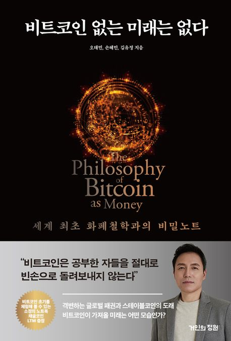

비트코인 없는 미래는 없다. - 오태민, 손혜민, 김유정 -
2026-04-11

워낙 비트코인에 대한 이야기가 많은 요즘, 비트코인에 대해서 알고는 있었지만 개략적인 이야기에서 나아가 그 흐름을 조금 더 잘 파악하고 싶은 마음에 이 책을 읽게 되었다. 전체적인 별점은 5점 만점에 4점 정도다. 나쁘지 않았고, 경제적인 지식 베이스와 많이 엮여 있어 흥미로웠다. 최신 책이다 보니 근래의 사건들과 연결해 잘 나열해준 점도 좋았다.
다만 이 책은 비트코인이나 블록체인의 기술적인 부분을 깊게 파고들기보다는, 경제와 사회, 그리고 거시적인 국제 흐름과 엮어서 풀어내는 데 더 집중한다. 그래서 기술 자체를 배우는 책이라기보다, 비트코인을 둘러싼 세계를 시야를 넓혀 바라보는 데 도움이 되었던 책으로 남았다.
2008년 9월 15일 리먼 브라더스의 파산은 하나의 대형 투자은행이 무너진 사건이 아니라, 금융 시스템 전반이 만들어낸 착각의 정점이자 세계 통화 질서가 구축한 신용 창출 메커니즘의 붕괴를 상징하는 사건으로 읽힌다. 이 위기의 중심에는 미국 주택시장의 거품이 자리하고 있었고, 저금리 기조와 느슨한 대출 기준은 모든 미국인이 주택을 소유할 수 있다는 국가적 서사를 부채로 현실화시켰다.
그 결과 신용등급이 낮은 계층에 대거 주택담보대출이 발행되며 서브프라임 모기지가 확산되었다. 처음에는 낮은 금리가 상환 가능성을 보장하는 듯 보였지만 금리가 상승하면서 부실은 빠르게 현실화됐고, 결국 자산 매각과 증자 모두 실패한 리먼은 단기 유동성이 말라붙으며 채무불이행 상태에 이르렀다. 이 파산은 금융기관 간 상호신뢰를 무너뜨렸고, 글로벌 신용경색이라는 도미노를 촉발했다. 미국은 물론 유럽과 아시아까지 확산된 충격은 금융위기가 단지 한 국가의 시장 실패가 아니라 세계 통화 질서의 구조적 한계를 드러낸 사건임을 보여준다. 결국 2008년의 금융위기는 단순한 부동산 버블 붕괴가 아니라, 달러 기반 통화체제가 신용창출을 통해 확장해온 구조가 내포한 자기 폭발이었다.
글로벌 금융위기는 단순히 탐욕이나 규제 부재만으로 설명하기 어려운 복합적인 원인을 지닌다. 그 심층에는 금융공학 모델에 대한 맹신과 인간 본성에 대한 오만이 자리잡고 있었다. 20세기 후반 금융시장의 고도화는 예측과 통제를 위한 정교한 도구를 요구했고, 물리학과 수학, 컴퓨터과학 분야의 엘리트들이 월스트리트로 유입되어 복잡한 수학 모델과 통계기법을 활용한 새로운 금융상품 설계 및 위험 분석에 기여했다. 1970년대 블랙숄즈 모형의 등장은 옵션 가격 결정이론에 혁명을 가져왔고, 이는 파생상품 시장의 폭발적인 성장을 이끌었다.
하지만 이 모델들은 자산가격 분포가 정규분포를 따르고 변동성이 일정하다는 이상적 가정을 기반으로 했고, 실제 금융시장의 복잡성을 완전히 담아내지 못했다. 현실의 시장은 평균에서 크게 벗어나는 큰 폭의 변동이 정규분포가 예측하는 수준보다 더 자주 나타나는 팻테일의 특성을 보인다. 시장 참여자들의 비합리적인 행동, 군집행동, 패닉 같은 심리적 요인 역시 수학 모델이 포착하기 어려운 영역이었다.
문제는 수학자들과 금융인들이 자신들의 모델이 시장의 모든 위험을 정량화하고 관리할 수 있다는 오만에 빠졌다는 점이다. 그런 맹목적인 신뢰는 더 복잡하고 불투명한 파생상품들의 대량생산으로 이어졌다. LTCM은 정교한 수학 모델을 통해 시장의 비효율을 찾아내고 무위험 차익거래로 막대한 수익을 올릴 수 있다고 확신했다. 실패 확률을 우주선 사고 확률보다 낮다고 계산할 정도로 자신만만했고, 막대한 레버리지로 수익률을 극대화했다.
하지만 1998년 러시아 국가채무 불이행 선언은 전 세계 금융시장에 극심한 불안을 야기했고, 안전자산 선호 심리가 급증하면서 LTCM의 모델이 예측하지 못한 방향으로 시장이 움직였다. 모델이 극히 드물다고 예측했던 사건들이 동시다발적으로 발생하며 손실은 커졌고, 불과 몇 주 만에 40억 달러 이상 손실을 입고 파산 직전까지 몰렸다. 미국 연방준비제도의 개입으로 간신히 위기를 모면했지만, 이 사례는 극단적인 상황에서는 통계적 예측을 벗어나는 블랙스완이 언제든 나타날 수 있음을 입증했다.
오늘날 금융 시스템은 점차 자산 기반 신용 체계로 이행하고 있음을 보여준다. 전통적으로는 차입자의 상환능력이나 사업전망이 신용평가의 중심이었다면, 이제는 보유 자산을 얼마나 안정적으로 담보화할 수 있는지가 금융기관의 신용과 생존 가능성을 결정한다.
스테이블코인은 암호화폐의 극심한 가격 변동성과 사용처의 불안정성이라는 구조적 한계를 극복하기 위한 기술적 해법으로 등장했다. 비트코인과 이더리움 같은 주요 화폐는 하루 중 수퍼센트 단위의 급등락을 반복할 만큼 높은 변동성을 지니고 있는데, 이는 암호화폐가 일상적 결제수단으로 자리잡고 대중적으로 확산하는 데 큰 장애물로 작용한다. 이런 불안정한 가격 구조와 폐쇄적인 금융환경은 법정화폐의 가치를 디지털 방식으로 재현하면서도 블록체인 위에서 작동하는 새로운 자산의 필요성을 자극했고, 그런 문제의식 속에서 등장한 스테이블코인은 블록체인의 분산성을 유지하면서도 안정적인 가치를 제공하는 것을 목표로 한다.
스테이블코인은 크게 네 가지 유형으로 구분된다. 첫째, 법정화폐 담보형은 가장 널리 사용되는 형태로 테더의 USDT와 서클의 USDC가 대표적이다. 이들은 달러와 같은 법정통화를 은행계좌나 단기 국채 형태로 예치함으로써 1:1의 가치를 유지하고, 안정성과 신뢰성이 높아 국제 송금이나 결제 등 다양한 분야에서 폭넓게 활용된다. 둘째, 실물자산 담보형은 금이나 원유 같은 실물을 기반으로 하며 자산 자체의 내재가치를 바탕으로 가격을 유지한다. 다만 실물 기반인 만큼 보관 및 관리 비용이 발생하고, 발행 주체의 투명성과 신뢰에 크게 의존하기 때문에 블록체인의 기본 원칙과는 거리가 있다.
셋째, 가상자산 담보형은 비트코인이나 이더리움 같은 암호자산을 초과담보로 설정해 발행된다. 넷째, 알고리즘형은 별도의 담보 없이 수요와 공급에 따라 유통량을 조절하는 방식으로 설계된다. 이 방식은 이론적으로는 효율성을 추구하지만 담보가 없다는 본질적 한계로 인해 가격 붕괴 위험이 높고, 2022년 테라루나 사태는 알고리즘형 스테이블코인의 구조적 취약성을 드러내며 시장에 큰 충격을 안겼다.
현 유통 스테이블코인의 대부분은 법정화폐 담보형이다. 이는 단지 수량의 우세를 넘어 제도권 금융과의 연결성, 그리고 실물 기반 신뢰를 제공한다는 점에서 생태계의 중심축으로 기능하고 있다. 테더는 세계 최대 규모의 스테이블코인 발행사 중 하나인데, 브록 피어스, 벤저민 리브, 리브 콜린스 등에 의해 2014년 설립되었다고 정리된다. 다만 출범 초기부터 USDT 준비금의 투명성에 대한 의혹은 끊이지 않았다. 발행된 USDT에 상응하는 달러 준비금을 실제로 충분히 보유하고 있는지에 대한 지속적인 의구심이 제기되었고, 때로는 1:1 페깅 안정성이 흔들리는 사태로도 이어졌다.
테더는 중국 정부가 암호화폐 거래소를 차단하면서 급격히 성장했다. 은행계좌를 통해 비트코인과 이더리움을 직접 구매할 수 없게 되자 중국 투자자들은 USDT를 통해 암호화폐 시장에 진입하는 우회로를 찾았고, 이는 테더 발행량의 급증으로 이어졌다.
비트코인은 하나의 명확한 명제를 제안한다. 신뢰는 반드시 사람이나 제도에 의존해야 하는가. 이에 대한 비트코인의 대답은 단호하다. 그렇지 않다. 신뢰는 코드의 작동 방식, 알고리즘의 불변성, 네트워크의 자율적 합의 위에서도 생성될 수 있다. 기술은 단순한 수단이 아니라 질서의 구조 자체가 될 수 있으며, 인간 없이도 작동하고 권력 없이도 유지되는 세계가 가능하다는 사실을 실증적으로 보여준다.
비트코인은 국가가 설계한 질서가 아니다. 그것은 법이 물러난 자리에 자생적으로 형성된 기술적 규범이며, 이후의 모든 프로그래머블 머니 생태계가 뿌리내릴 수 있었던 최초의 기반이자 가장 강한 모델이다. 비트코인이 열어젖힌 세상은 아직 누구도 밟아보지 않은 미답의 땅이며, 그 여정 또한 어느 한 관점에만 갇히지 않은 방식으로 전개될 수 있다. 비트코인 맥시멀리스트들은 비트코인의 독보적인 보안성, 탈중앙성, 그리고 최초라는 상징성에 기대어, 비트코인이 디지털 금으로서의 가치 저장 기능을 넘어 모든 거래와 금융활동의 최종 보안 계층이 되어야 한다고 믿는다.
이더리움은 스마트 콘트랙트를 누구나 작성하고 실행할 수 있도록 구현한 범용 컴퓨팅 플랫폼이다. 이를 가능하게 하는 핵심 구조가 바로 이더리움 가상머신(EVM)이다. EVM은 블록체인 네트워크 위에 구현된 하나의 추상적 컴퓨터로, 전 세계 누구나 접근할 수 있는 탈중앙화된 계산환경이자 스마트 콘트랙트를 실행하는 기반 시스템이다.
개발자들은 솔리디티라는 전용 언어를 통해 계약 조건을 코드로 작성하고 이를 블록체인상에 영구히 기록한다. 한 번 배포된 스마트 콘트랙트는 원칙적으로 변경이 불가능하며, 그 실행은 누구도 임의로 중단시킬 수 없다. 이런 불변성과 자율성은 스마트 콘트랙트를 법률이나 계약서가 아닌 하나의 실행 가능한 프로토콜로 기능하게 만든다. 이 프로토콜 위에서 작동하는 애플리케이션이 바로 디앱이고, 디앱은 중개자 없이 자산과 조직을 운영하며 사전에 설정된 조건에 따라 자동으로 의사결정을 수행하는 구조를 갖는다. 결국 스마트 콘트랙트를 둘러싼 기술적 진화는 신뢰 없이도 질서를 구현할 수 있는가라는 비트코인의 원초적 질문에 보다 복합적이고 제도적인 방식으로 응답하는 셈이다.
이 책이 내게 좋았던 이유는 비트코인을 단순히 하나의 기술이나 자산으로 좁혀 보지 않고, 금융 시스템과 사회 구조, 국제 질서의 흐름 속에서 읽어내게 했다는 점이다. 너무 과거의 이야기만 하는 책도 아니었고, 지금의 시대 감각에 맞게 최근 사건들과 함께 배열해준 점도 괜찮았다. 반대로 기술적인 구조 자체를 깊게 기대하고 읽는다면 다소 결이 다르게 느껴질 수 있다. 이 책은 비트코인과 블록체인의 내부 메커니즘보다, 그것이 현재 세계와 어떻게 엮여 있는지를 설명하는 쪽에 더 가깝다.